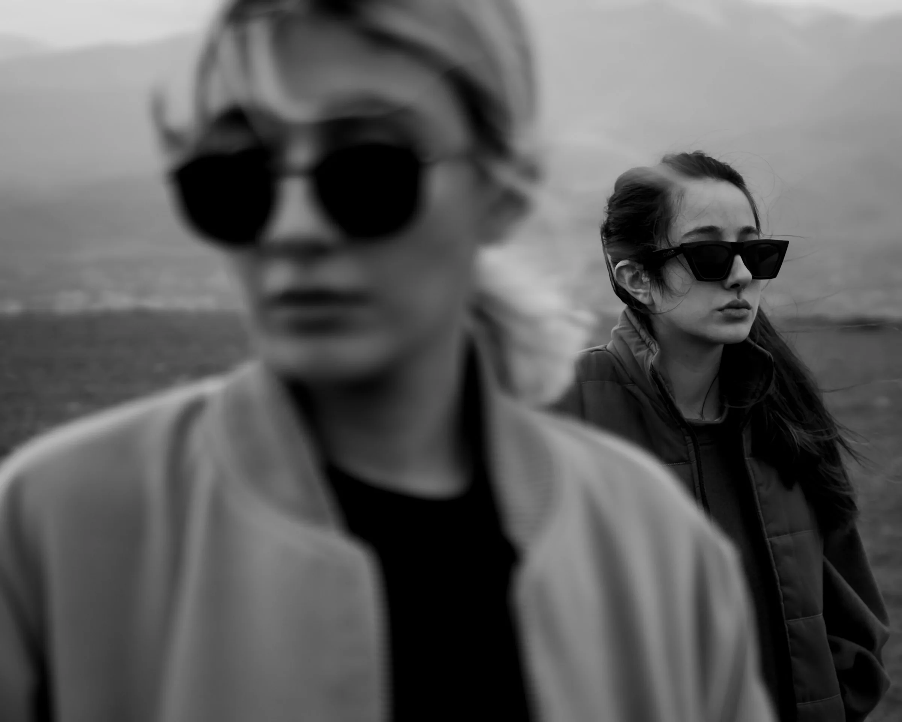
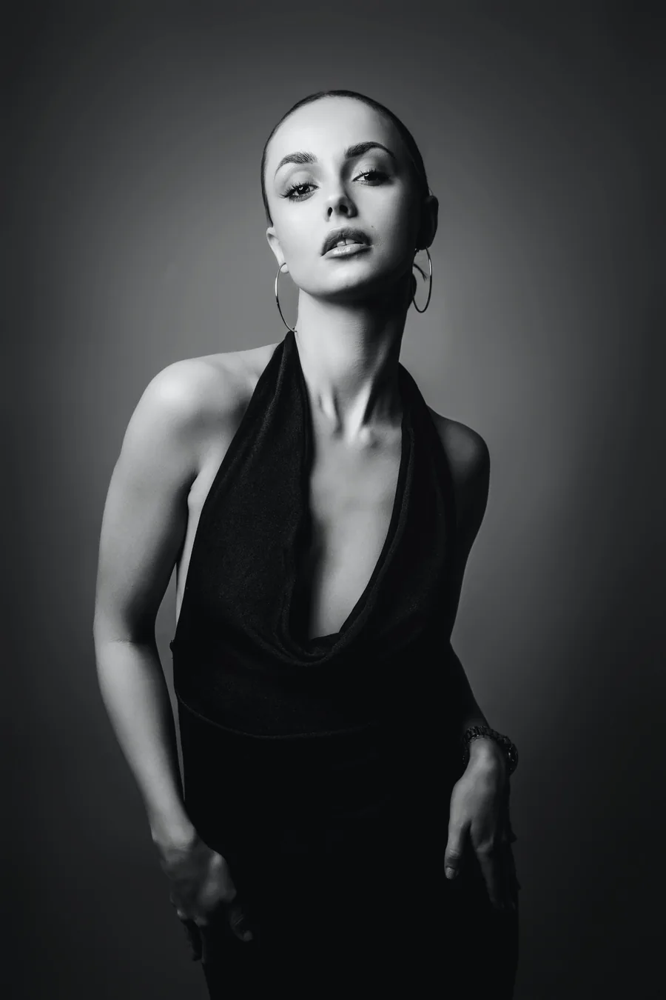
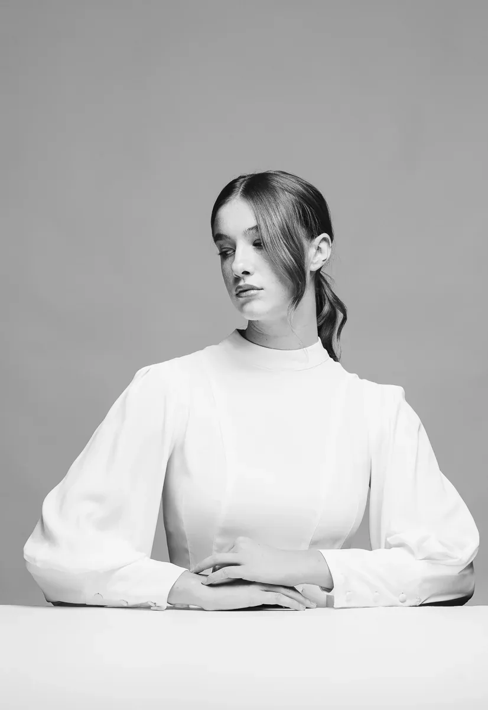
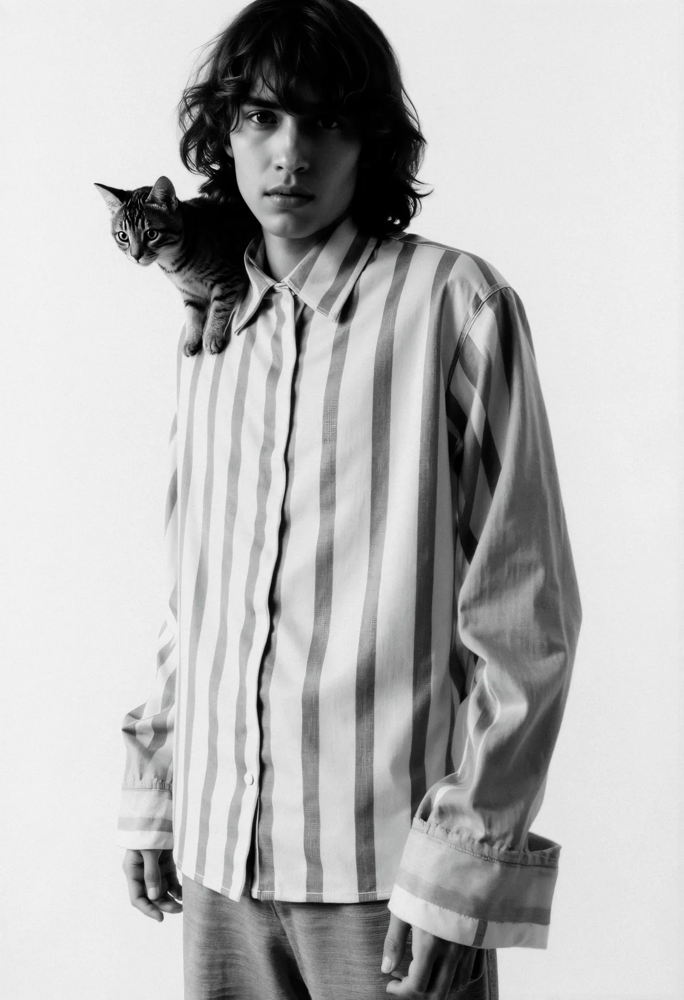
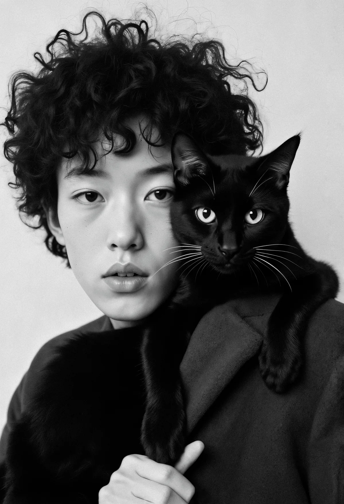
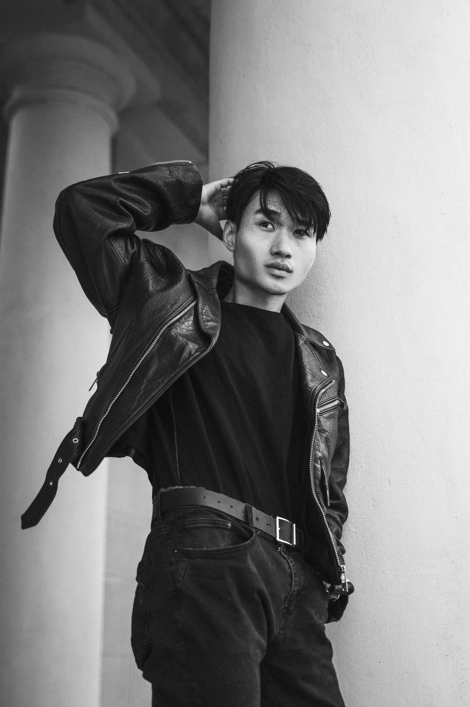
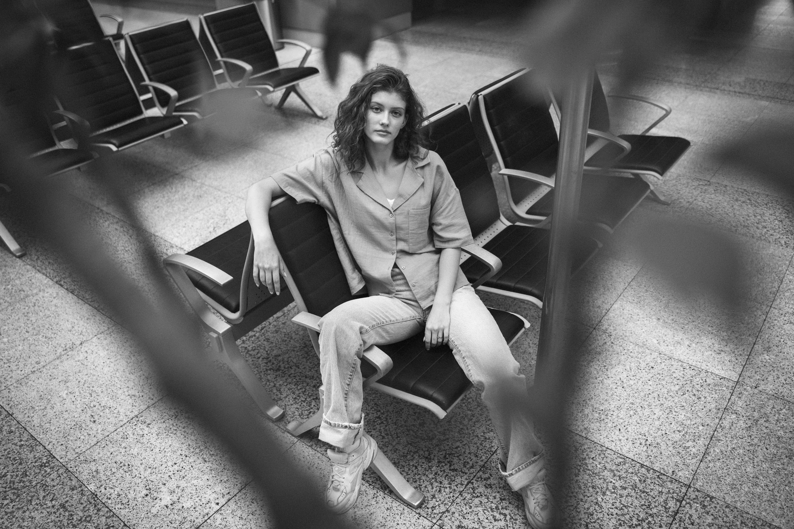
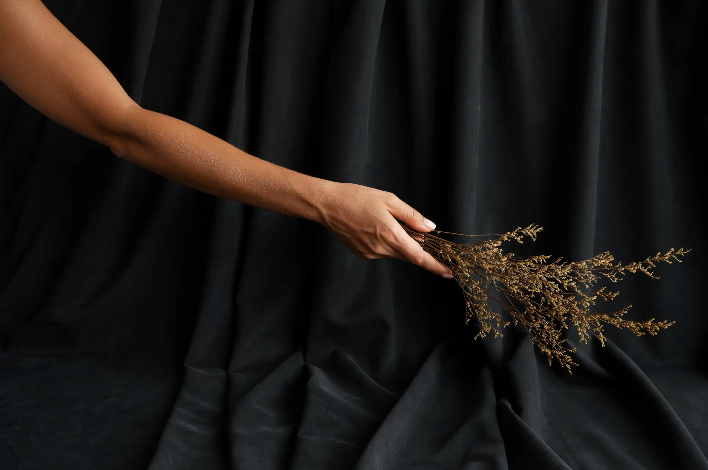

ÉVORA
Clothing is language. Wear your story.

Elegance, captured in motion.
The Évora Trench
The Lumen Blazer
The Solace Dress
Every stitch carries memory. Every silhouette, presence.
Fall / Winter 2025 — “A Dialogue in Black & Light”


A silhouette that outlives seasons.
Minimalism, tailored to presence
Ease woven into elegance




Minimalism
as expression
Eternal
Made to Matter
The seasonless essential.
The jacket that outlives seasons.
Designed for movement, made to last.
Less waste. More meaning. Made with empathy - for people and earth.
Own the Story

ÉVORA, 2025.
Clothes fade. Stories remain.